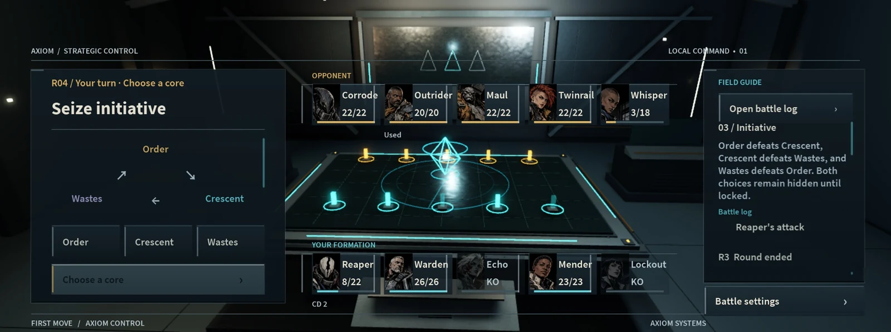

FIRST MOVE开放好友试玩后，有一条反馈指向了局内角色卡：人物之间的蓝色分隔条显得突兀，样式还不如之前。这个问题影响的是玩家持续观看和操作的位置，不能只靠首页或角色插画补救。
人物卡需要同时回答三个问题：是谁，当前状态怎样，能否选择。原来的通用按钮装饰占据了人物之间的空隙，却没有帮助回答这些问题。头像换过之后，外框与高光也需要一起调整。

先把普通按钮的装饰拿掉
首页按钮强调点击入口。角色卡还要在整场对局里反复提供状态信息，所以头像、数值和选中提示需要各自有固定位置。材质可以保持一致，信息结构则应服务各自的用途。
这轮收起了竖条与通栏高光，使用深色背景和较薄的边缘明暗；阵营色集中在角落。这样可以保留身份提示，同时减少穿过人物间隙的线条。
头像、名称、数值各有位置
中英文曾使用不同的头像与文字安排，窄卡片上攻击力还可能被隐藏。切换语言后，同一项信息的位置改变，会增加寻找成本。长英文名也需要单独检查。
新版统一了上方头像、下方名称和底部攻击／生命信息。血条使用较低饱和度的颜色，低生命时转为暖色；选中提示集中在边框与切角，避免整张卡大面积变亮。

静态排版完成后，还要看结算
静态排版之外，还要检查命中与死亡。受击位移会改变头像位置，血条需要跟随结算更新，死亡碎片则必须在动画结束后清理。每个效果都可能影响下一次操作。
因此保留原有角色标识与血条连接，检查受击后的归位、生命比例、死亡后的不可选状态，以及临时碎片的清理。画面调整如果破坏这些连接，正常截图也无法说明实际对局没有问题。
字能放下，只是第一关
这轮按十二位角色、两种语言、三档卡宽检查排版：98、148、180像素，共72组。它们用于发现名称或数值越界，再回到十张人物卡同时出现的战斗画面确认整体关系。
排版检查还不能回答头像是否醒目、选中是否好认。对局里，玩家需要快速区分自己选中的角色与对方状态。这些仍要结合真实操作和试玩反馈判断。
调整后上传到了原来的Roblox体验。后续我想继续观察玩家是否能顺手认出角色、生命与可选状态，再检查技能演出是否遮住了下一步需要使用的信息。
查看 FIRST MOVE 游戏介绍 ↗